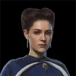
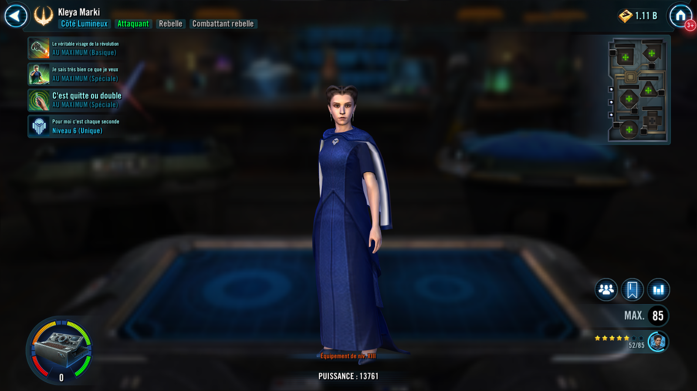
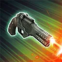
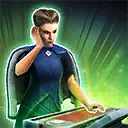
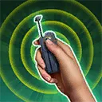

Kleya Marki
A tactical intelligence operative and Attacker, unafraid to cross lines to ensure the Rebellion survives

A tactical intelligence operative and Attacker, unafraid to cross lines to ensure the Rebellion survives


Deal Physical damage to target enemy. If Luthen Rael was an ally at the start of battle, this attack can't be evaded. If all allies are Rebel Fighters, this attack will always critically hit if able, and deals +150% Critical Damage against Undermined enemies.

If target enemy is not Undermined, Undermine them for 1 turn, which can't be dispelled. Call Luthen Rael and another random Rebel Fighter ally to assist, then Kleya assists. Rebel Fighter allies gain Offense Up for 2 turns at the end of that turn.
Undermine: +25 Speed; -25% Critical Avoidance and Critical Chance; can't gain bonus Turn Meter

Deal Physical damage to all enemies and inflict Burning on them for 1 turn. Remove 50% Turn Meter from Undermined enemies and increase their cooldowns by 1. Target ally gains Keen Stratagem until the end of encounter.
If target ally is Luthen Rael and he has 25% Health or less, defeat him, and he can't be revived. When Luthen is defeated this way, revive all Rebel Fighter allies with 100% Health, grant all Rebel Fighter allies Rebel Network until the end of encounter, which can't be copied, dispelled, or prevented, and Ability Block all enemies for 2 turns, which can't be dispelled, evaded, or resisted.
Rebel Network: +30% Critical Chance, +30 Speed, and immune to Healing Immunity; when this character is defeated, revive with 100% Health; whenever this character defeats an enemy, dispel all debuffs on this character, and all allies recover 100% Health and Protection
Kleya has +30% Critical Chance and +50% Potency. Allies with Keen Stratagem have +25% Accuracy and ignore Taunt.
Kleya gains 10% Turn Meter whenever a Rebel Fighter ally is damaged (once per turn; 20% if that ally is Luthen Rael). Whenever an Undermined enemy inflicts Kleya with a debuff, she dispels all debuffs on herself and reduces her cooldowns by 1. Whenever Luthen Rael uses a Special ability, inflict the target enemy with Undermine for 1 turn.
While Luthen Rael is active, Kleya can't be targeted and has +100% Evasion. If Cassian Andor (Undercover) is active and Luthen was not at the start of battle, Kleya gains the same benefits. The first time Luthen Rael's Health is reduced to 25% or less, he gains Damage Immunity for 1 turn and Kleya takes a bonus turn.
Omicron Boost : While in 3v3 Grand Arenas: At the start of battle, if there are no Galactic Legend allies and the ally in the Leader slot is Saw Gerrera or Mon Mothma, Kleya gains bonuses based on the Leader. If the Leader is Saw Gerrera, Kleya gains Axis, if the Leader is Mon Mothma, Kleya gains Curator, until the end of encounter.
If Luthen Rael is an ally, Kleya can't be defeated until his Health is reduced to 25% or less. The first time Luthen Rael's Health is reduced to 25% or less, Kleya resets the cooldown of This Is Do or Die.
Axis: Whenever Kleya uses I Know What I Want, inflict Buff Immunity on target enemy for 1 turn, which can't be dispelled; all allies gain Evasion Up 2 turns.
Curator: Whenever Kleya uses This Is Do or Die, Rally Mon Mothma and all Rebel Fighter allies. All allies gain Critical Damage Up for 2 turns. Mon Mothma and all other Rebel Fighter allies gain 30% Offense (stacking) and are immune to Turn Meter reduction for 2 turns. If an ally already has Keen Stratagem, grant Keen Stratagem to all other Rebel Fighter allies until the end of encounter.